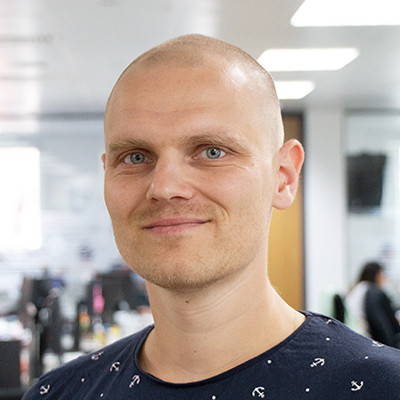

<div class="container mx-auto">
  <div class="flex">
    <div class="w-3/12 prose flex-initial hidden lg:block md:block">
      
      {% include details.html %}
    </div>
    <div class="flex-1 w-9/12">
      <div class="prose lg:prose-xl">
        <div class="flex items-center">
          <div class="flex-1">
            <h1>Robin Bortlík</h1>
          </div>
          <div class="flex-0 lg:hidden md:hidden"></div>
        </div>

      </div>

      <div class="prose">
        <p class="pt-6">
          I'm a software developer with 10+ years of experience. For most of my career, I have been
          working within small teams building small and large scale web applications, using Ruby and
          Javascript.
        </p>

        <p>
          I'm a great team player whose primary focus is on team goals. I try to help, share and
          deliver.
        </p>

        <div class="grid grid-cols-1 lg:hidden md:hidden">
          {% include details.html %}
        </div>

        <h2>Employment History</h2>

        {% for item in site.data.employment %}
          <h3>{{item.company}}</h3>
          <span>{{item.dates}}</span>&nbsp;-&nbsp;<span>{{item.city}}</span>
          <p>{{item.description}}</p>
          <ul>
            {% if item.tech %}
              <li>Tech: {{item.tech}}</li>
            {% endif %}
            {% if item.skills %}
              <li>Skills: {{item.skills}}</li>
            {% endif %}
          </ul>
        {% endfor %}

        <h2>Education</h2>
        <h3>University of Ostrava, Bachelor</h3>
        <span>Sep 2007 — Aug 2010</span>
        <p class="pb-20">Information technologies in education</p>
      </div>
    </div>
  </div>
</div>
